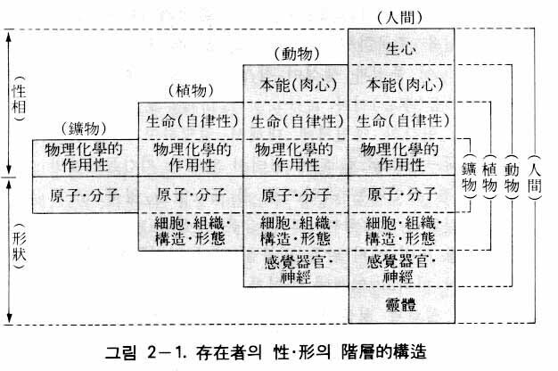
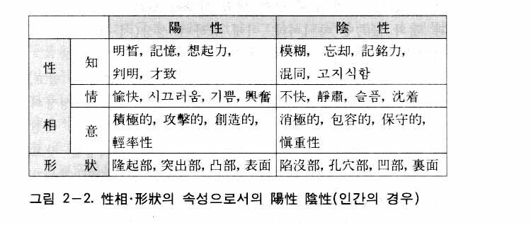
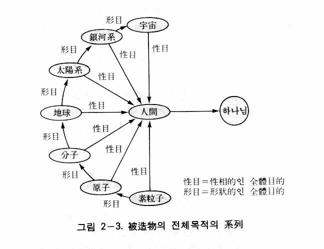
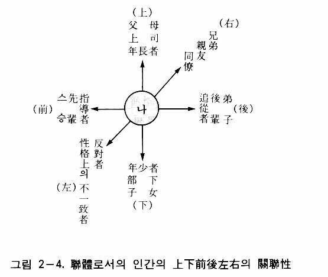
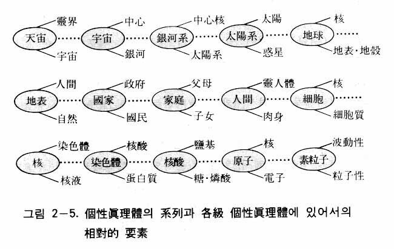
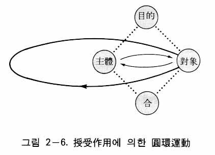
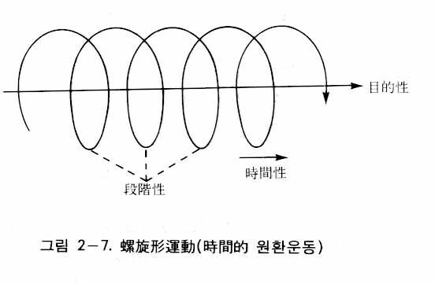
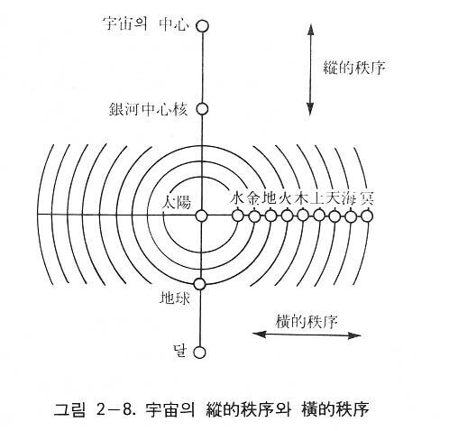
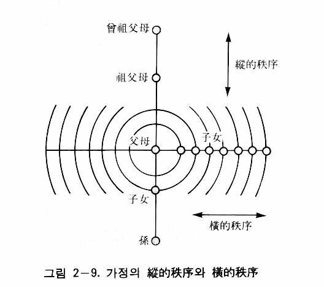

一般哲学でいう存在論のギリシア語の原語は Ontologia であり、それは onta（存在するもの）とlogos（論理）の合成語であって、存在論は存在に関する根本問題を研究する哲学の一つの部門をいうのである。しかし統一存在論は、統一原理を基本にして、すべての存在が神によって創造された被造物であると見る立場であり、被造物の属性（共通の属性）は何であり、被造物はいかに存在し、またそれはいかなる運動をしているか、ということを扱う部門である。
本存在論は、すべての被造物をその対象としている。したがって人間も被造物であるので、本存在論の対象であるのはもちろんである。しかし人間は万物の主管主であって、万物とはその格位が違うので、人間に関しては特に本性論においてさらに詳細に論ずることにする。したがって本存在論は、主として万物に関する理論であるということができる。
原相論は神に関する理論であるが、存在論は万物に関する説明を通じて原相論を裏づける理論である。つまり原相論は統一原理に基づいた演繹的な理論であるために、そこで説明された神の属性が、実際にどのように万物の中に現れているか、また現れているとすればどのように現れているか、ということを明らかにするのが本存在論なのである。そして、もし万物の中にそのような神の属性が普遍的に現れている事実が明らかにされれば、原相論の真理性がよりいっそう保証されるのである。言い換えれば、万物の属性を扱う存在論は無形の見えない神の属性を可視的に確認する理論であるということができる。
今日、自然科学は急速な発展を遂げたが、ほとんどの場合において、科学者たちは神のことを考えず、ただ客観的に自然界を観察しただけであった。しかし相似の法則によって万物が創造されたために、自然を観察した科学的事実が神の属性と対応するということが明らかにされれば、自然科学はむしろ原相論を裏づけるという論理が成立するようになる。実際、今日までの自然科学の成果が神に関する理論を裏づけるという事実が本存在論において証明されるであろう。
統一原理によれば、人間は神に似せて造られ（創世記一・二七）、万物は人間に似せて造られた。神は宇宙の創造に先立って、心の中でまず神に似せて人間の像（姿）を描いたのである。そして次に、その人間の像を根本として、それに似せて万物を一つ一つ創造されたのである。これを「相似の創造」という。そして、このような創造の法則を「相似の法則」という。
ところが万物は、今も昔も本来の姿をそのままもっているが、人間は堕落によって本来の姿を失ってしまったために、人間によって構成された社会も本来の姿を失い、非正常的な状態におかれるようになった。したがって現実の人間と社会そのままでは「存在の問題」と「関係の問題」の解決の道を見いだすことはできない。そこで聖人や哲人たちは、空の星の運行や、自然万物の消長、変化や、四季の変遷の中で悟った理論でもって、彼らの教えを打ち立てたのである。しかし彼らは、なぜ人間と社会を救済する真理が自然界を通して得られるのかを知ることはできず、ただ直感的にそのような真理を悟っただけであった。
統一原理によれば、万物は本然の人間の姿を標本として造られたものであるから、自然界を通じて本来の人間と社会の姿を知ることができるのである。原相論において、神の属性を正しく理解することが、人間や社会の諸問題を解決することのできる鍵となることを説明した。しかるに創造は相似の創造であるために、神の属性だけでなく、万物の属性を正しく理解すれば、これもまた現実問題の解決の鍵となるのはもちろんである。したがって、存在論も現実問題を解決するまた一つの基準となる思想部門なのである。
本存在論では、万物一つ一つの個体を存在者という。したがって存在論は存在者に関する説明であり理論であるということができる。そして存在者に関する説明を「個性真理体」と「連体」という二項目に分けて行うことにする。
ここで個性真理体とは、神の属性、すなわち原相の内容にそのまま似た個体のことをいうのであり、一個体を他の個体との関係を考えずに、独立的に扱う時の被造物をいう。しかし実際は、すべての個体は相互間に密接な関係を結んで存在する。そこで一個体を他の個体との関係から見るとき、その個体を連体という。したがって連体は、相互関連性をもつ個性真理体をいうのである。
被造物（存在者）は神に似せて造られたから、すべての被造物の姿は神相に似ている。しかるに神相には普遍相と個別相があるので、すべての個体は原相に似て、普遍相と個別相をもっている。ここで普遍相とは性相と形状および陽性と陰性をいい、個別相とは各個体がもっている特性をいう。まず個性真理体の普遍相、すなわち性相と形状、陽性と陰性について説明する。
すべての被造物は、何よりもまず原相に似た属性として性相と形状の二側面をもっている。性相は機能、性質などの見えない無形的な側面であり、形状は質料、構造、形態などの有形的な側面である。
まず鉱物においては、性相は物理化学的作用性であり、形状は原子や分子によって構成された物質の構造、形態などである。
植物には、植物特有の性相と形状がある。植物の性相は生命であり、形状は細胞および細胞によって構成される組織、構造、すなわち植物の形体である。生命は形体の中に潜在する意識であり、目的性と方向性をもっている。そして生命の機能は、植物の形体を制御しつつ成長させていく能力、すなわち自律性である。植物はこのような植物特有の性相と形状をもちながら、同時に鉱物次元の性相的要素と形状的要素をも含んでいる。つまり植物は、鉱物質をその中に含んでいるのである。
動物においては、植物よりもさらに次元の高い動物に特有な性相と形状がある。動物の性相とは本能をいう。そして動物の形状とは、感覚器官や神経を含む構造や形態などである。動物もやはり鉱物質をもっているのであって、鉱物次元の性相と形状を含んでいる。さらに植物次元の性相と形状をも含んでいる。動物の細胞や組織は、みなこの植物次元で作用しているのである。
人間は、霊人体と肉身からなる二重的存在である。したがって人間は、動物よりもさらに次元の高い、特有の性相と形状をもっている。人間に特有な性相とは、霊人体の心である生心であり、特有な形状とは霊人体の体である霊体である。そして人間の肉身においては、性相は肉心であり形状は肉体である。
人間の肉体の中には鉱物質が含まれている。したがって人間は、鉱物次元の性相と形状をもっている。また人間は、細胞や組織からできており、植物次元の性相と形状をもっている。また動物と同じように、人間は感覚器官や神経を含んだ構造と形態をもっており、動物次元の性相と形状をもっているのである。人間の中にある動物次元の性相、すなわち本能的な心を肉心をいう。こうして人間の心は本能としての肉心と、霊人体の心である生心から構成されているのである。ここで肉心の機能は衣食住や性の生活を追求し、生心の機能は真善美と愛の価値を追求する。生心と肉心が合性一体化したものが、まさに人間の本然の心（本心）である。
ここで人間の霊人体について説明する。肉身は万物と同じ要素からできており、一定の期間中にだけ生存する。一方、霊人体は肉身と変わりない姿をしているが、肉眼では見ることのできない霊的要素からできていて、永遠に生存する。肉身が死ぬとき、あたかも古くなった衣服を脱ぎ捨てるように、霊人体は肉身を脱ぎ捨てて、霊界において永遠に生きるのである。霊人体も性相と形状の二性性相になっているが、霊人体の性相が生心であり、形状が霊体である。霊人体の感性は肉身生活の中で、肉身との相対関係において発達する。
すなわち霊人体の感性は肉身を土台として成長する。したがって人間が地上で神の愛を実践して他界すれば、霊人体は充満した愛の中で永遠に喜びの生活を営むようになる。逆に地上で悪なる生活を営むならば、死後、悪なる霊界にとどまるようになり、苦しみの生活を送るようになるのである。
人間は鉱物、植物、動物の性相と形状をみなもっている。そしてその上に、さらに次元の高い性相と形状、すなわち霊人体の性相と形状をもっている。そのように人間は万物の要素をみな総合的にもっているために、人間は万物の総合実体相または小宇宙であるという。以上説明したことにより、鉱物、植物、動物、人間と存在者の格位が高まるにつれて、性相と形状の内容が階層的に増大していくことが分かる。これを「存在者における性相と形状の階層的構造」といい、図で表せば図２―１のようになる。

ここで留意すべきことは、神の宇宙創造において、鉱物、植物、動物、人間の順序で創造するとき、新しい次元の特有な性相と形状を前段階の被造物に加えながら創造を継続し、最後に最高の次元の人間の性相と形状を造ったのではないということである。神は創造に際して、心の中にまず性相と形状の統一体である人間を構想された。その人間の性相と形状から、次々に一定の要素を捨象し、次元を低めながら、動物、植物、鉱物を構想されたのである。しかし時間と空間内における実際の創造は、その逆の方向に、鉱物から始まって、植物、動物、人間の順序で行われたのである。これを結果的に見るとき、人間の性相と形状は、鉱物、植物、動物のそれぞれ特有な性相と形状が積み重なってできたように見えるのである。人間の性相と形状が階層的構造を成しているということは、次のような重要な事実を暗示している。
第一に、人間の性相は階層性をもちながら、同時に連続性をもっているということである。すなわち人間の心は生心と肉心から成っているが、生心と肉心には互いに連なっている。したがって生心によって肉心をコントロールすることができるのである。また人間の心は、生命とも連なっている。通常、心は自律神経をコントロールすることはできないが、訓練によってそれが可能となることが知られている。例えばヨガの行者は、瞑想によって心臓の鼓動を自由に変化させたり、時には止めることさえできるのである(1)。そして心は、体内の鉱物質の性相とも通じているのである。
人間の心はまた、対内的だけでなく対外的にも、他の動物や植物の性相とも通じ合っている。例えば人間は念力によって、物理的手段を用いることなく、動物や植物はもちろん鉱物にまでその影響を及ぼすことができるということも、明らかにされている(2)。動物、植物、鉱物が人間の心に反応するということも知られている。植物の場合、アメリカの嘘発見器の検査官であるクレーブ・バクスターが確認した「バクスター効果」がその一つの例である(3)。そして、鉱物や素粒子も自体内に思考力をもっているのではないかという推測までなされているのである(4)。
第二に、人間の性相と形状の階層的構造は、生命の問題に関して重要な事実を示唆している。今日まで、無神論者と有神論者は神の実在に関して絶えず論争を続けてきた。その度ごとに、有神論者たちは「神なしに生命が造られることはない。神だけが生命を造ることができる」と言って無神論を制圧してきたのである。いくら自然科学が発達しても、生命の起源に関する限り、自然科学は合理的な論証を提示することはできなかった。そして長い間、生命の起源の問題は有神論が成立しうる唯一のよりどころであった。ところが今日、その唯一の拠点が無神論によって破壊されている。科学者が生命を造りうる段階に至ったと主張するようになったからである。
では、果たして科学者は生命を造ることができるのであろうか。今日の生物学によれば、細胞の染色体に含まれるＤＮＡ（デオキシリボ核酸）はアデニン、グアニン、シトシン、チミンという四種類の塩基を含んでいるが、この四種類の塩基の配列が生物の設計図というべき遺伝情報になっている。この遺伝情報に基づいて生物の構造や機能が決定されているのである。結局、ＤＮＡによって生命体が造られているという結論になる。そして今日、科学者がＤＮＡを合成しうるという段階にまで至った。したがって唯物論者たちは、生命現象を説明するのに神の存在は全く必要ないと主張する。結局、神はもとより存在しないというのである。
ところで科学者がＤＮＡを合成するということは、果たして生命を造ることを意味するのであろうか。統一思想から見れば、科学者がいくらＤＮＡを合成したとしても、それは生命体の形状面を造ったにすぎない。生命のより根本的な要素は生命体の性相である。したがって科学者が造りえるのは、生命それ自体ではなく、生命を担うところの担荷体にすぎないのである。人間においても、形状である肉身は性相である霊人体を担っているのであって、肉身は父母に由来するが、霊人体は神に由来するのである。同様に、ＤＮＡが科学者に由来しうるとしても（すなわち科学者がＤＮＡを造ったとしても）、生命それ自体は神に由来するのである。
ラジオと音声について考えてみよう。ラジオは放送局から来る電波を捕らえて音波に変化させる装置にすぎない。したがって科学者がラジオを造ったとしても、科学者が音声を造ったわけではない。音声は放送局から電波に乗ってくるものだからである。それと同じように、たとえ科学者がＤＮＡを造ったとしても、それは生命を宿す装置を造ったにすぎないのであって、生命そのものを造ったとはいえないのである。
宇宙は生命が充満している生命の場であるが、それは神の性相に由来するものである。そこで生命を捕らえる装置さえあれば、生命がそこに現れるのである。その装置にあたるのがＤＮＡという特殊な分子なのである。「性相と形状の階層的構造」から、そのような結論が導かれるのである。
陽性と陰性も二性性相である
次は、個性真理体の陽性と陰性について説明する。原相論で述べたように、陽性と陰性も神の二性性相であるが、それは性相と形状の属性である。つまり性相にも陽性と陰性があり、形状にも陽性と陰性があるということである。
まず、人間の性相と形状における属性としての陽性と陰性について説明する。人間の性相は心であるが、心には知情意の三機能がある。この知情意のそれぞれの機能に陽的な面と陰的な面があるのである。
知の陽的な面は、明晰、記憶、想起力、判明、才知などである。それに対して知の陰的な面は、模糊、忘却、記銘力、混同、生真面目などをいう。情の陽的な面は、愉快、騒がしい、喜び、興奮などであり、情の陰的な面は、不快、静粛、悲しみ、沈着などである。意においては、積極的、攻撃的、創造的、軽率性などが陽的な面で、消極的、包容的、保守的、慎重性などが陰的な面である。
形状すなわち体においては、隆起した部分、突き出した部分、凸部、表面などが陽的な面であり、陥没した部分、孔穴部、凹部、裏面などが陰的な面である。以上の内容を整理すれば、表２―2のようになる。

動物、植物、鉱物においても、それぞれ性相に陽性と陰性があり、形状に陽性と陰性がある。動物には活発に行動する時と、そうでない時がある。植物には成長する時と枯れる時があり、花が咲く時と散る時があり、幹は上に向かい、根は地中に向かっている。そして鉱物においては、物理化学的作用性が活発に進行する時と、そうでない時がある。これらがそれぞれ性相面における陽性と陰性である。形状面にも陽性と陰性の現象が現れる。形状の突出部と孔穴部、高と低、表と裏、明と暗、剛と柔、動と静、清と濁、熱さと冷たさ、昼と夜、夏と冬、天と地、山と谷などが陽陰の例である。
以上、個性真理体の性相と形状における陽性と陰性について説明した。ところで各個性真理体において、性相と形状はこのように陽性と陰性を属性としてもっているが、ある個体は陽性をより多く表し、他の個体は陰性をより多く表している。前者を陽性実体といい、後者を陰性実体という。人間における男と女、動物における雄と雌、植物における雄しべと雌しべ、分子における陽イオンと陰イオン、原子における陽子と電子がその例である。単細胞のバクテリアにも雄と雌があるといわれている。
人間の場合の陽性実体と陰性実体
陽性実体と陰性実体は特に人間において、それぞれ男子と女子を表す概念としてよく用いられる。それでは人間の場合、陽性実体と陰性実体とは具体的にいかなるものであろうか。それに関してはすでに原相論において詳しく説明したが、ここで再びその要点を述べる。
形状（身体）において、男と女の陽陰の差異は明らかであって、それは量的差異である。すなわち男の身体は女の身体に比べて陽的な要素がより多く、女の身体は男の身体に比べて陰的な要素がより多いのである。それに対して性相（知情意の心）における男女間の差異は質的な差異である。
すでに説明したように、男女共に、知にも情にも意にも陽陰があるが、それぞれの陽陰には男女間で質的な差異があるのである。例えば陽的な知の陽である明晰の場合、男女共に明晰さをもっているが、男女で明晰さの質が異なるのである。男の明晰さは包括的な場合が多く、女のそれは分析的または縮小指向的な場合が多い。また陰的な情である悲しみの場合、男の悲しみは悲痛（激しい悲しみ）の傾向があり、女の悲しみは悲哀（繊細な悲しみ）の場合が多い。そして陽的な意である積極性の場合、男の積極性は硬い感触を与え、女の積極性は軟い感触を与えるのである。性相におけるこのような男女間の差異が質的差異である。
理解の便宣上、声楽の例を挙げてみよう。声楽において、男のテノールと女のソプラノは共に高音（陽）であるが、それらは互いに質的に異なっている。また男のバスと女のアルトは共に低音（陰）であるが、それらも互いに質的に異っているのである。男と女における、性相の属性である陽性と陰性には、そのように質的に差があるである。そのために男には男らしさが現れ、女には女らしさが現れるのである。
次に、宇宙の創造の過程において、いかに陽陰の作用が働いてきたかを見てみよう。神の創造は、陽陰の調和を活用した一種の壮大な芸術作品の創作に比喩することができる。すなわち調和という面から見るとき、神は「天地創造」という一つの壮大な交響曲を演奏してきたと見ることができるのである。神は大爆発（ビッグバン）より始めて(6)、銀河系を造り、太陽系を造り、地球を造られた。そして地球上において、植物、動物を造り、最後に人間を造られた。そのとき、交響曲の演奏において、音の高低、強弱、長短、陽的な楽器と陰的な楽器の演奏など、いろいろな陽陰が調和して作用しているのと同様に、宇宙創造の過程においても、無数の陽陰の調和が作用してきたと見るのである。
銀河系には約二千億の恒星があるが、それらは渦巻き状に配列されている。星の密なところが陽であり、まばらなところが陰である。地球には陸と海ができたが、陸が陽で海が陰である。山と谷、昼と夜、朝と夕、夏と冬なども陽陰の調和である。このように数多くの陽陰の調和が絡み合うことにより、宇宙が形成され、地球が形成され、生物が発生し、人間が出現したのである。
人間の活動も陽陰の作用によって行われている。夫婦の調和によって、家庭が維持される。美術創作においても、線の屈曲、色の明暗、濃淡、量感の大小などの陽陰の調和が必要である。
このように、宇宙の創造においても、人間社会の活動においても、陽性と陰性の調和が性相と形状を通じて現れているのである。このような陽陰の調和的な作用は変化や発展のために、そして美を表すために、なくてはならない要素である。ここに神が陽性と陰性を性相と形状の属性としたのは、陽性と陰性を通して調和と美を表すためであるという結論になるのである。
個性真理体は性相と形状、および陽性と陰性の普遍相のほかに、個体ごとに独特な属性をもっている。それが個性真理体の個別相であって、原相の個別相（原個別相）に由来しているのはもちろんである。
普遍相の個別化
個別相は普遍相と別個の属性でなく、普遍相それ自体が特殊化、個別化されたものである。すなわち普遍相は性相と形状、陽性と陰性であるが、これらの属性が個体ごとに異なって現れるのが、まさに個別相なのである。
人間の場合、個人ごとに性格（性相）が違い、体格や容貌（形状）が異なっている。また性相の陽陰や形状の陽陰も個人ごとに異なっている。例えば同じ喜び（情の陽）であっても、人によってその表現方法がそれぞれ異なっており、悲しみ（情の陰）においても同様である。鼻は体の陽的な部分であるが、鼻の高さと形は人によってそれぞれ異なっている。体の陰的な部分である耳の穴を見ても、その大きさとか形はやはり人によって異なっているのである。このように個別相は、普遍相それ自体が個別化されたものである。
種差と個別相
一定の事物が共通にもつ性質を徴表（Merkmal）といい、同一の類概念に属する種概念のうちで、ある種概念に現れる特有の徴表を種差（specific difference）という。例えば「人」は「犬」や「猫」と同じように「動物」という類概念に属する種概念であるが、「人」という種概念に独特な徴表である「理性的」というのが人間の種差である。（統一思想から見るとき、徴表や種差も、共に普遍相の特殊化であることはもちろんである。）したがって、ある生物の徴表は、いろいろな段階の種差が合わさったものとなっているのである。
例えば一人の人間を考えてみよう。人間は生物でありながら、植物ではない動物の微表すなわち種差をもっている。また動物として、無脊椎動物ではない脊椎動物の種差をもっている。また脊椎動物として、魚類や爬虫類ではない哺乳類の種差をもっている。また哺乳類として、食肉類や齧歯類ではない霊長類の種差をもっている。また霊長類として、テナガザルなどではないヒト科（Homonidae）の種差をもっている。またヒト科として、いわゆる猿人ではないヒト属（Homo）としての種差をもっている。またヒト属として、いわゆる原人ではないホモ・サピエンスの種差（理性的であるということ）をもっている。
このように人間の徴表にはおよそ、界（Kingdom）、門（phylum）、綱（class）、目（order）、科（family）、属（genus）、種（species）の七段階の種差が含まれている。そしてこのような七段階の種差の基盤のうえに、個人の特性すなわち個別相が立てられているのである。すなわち七段階の種差を土台とする個人の特性が人間の個別相である。
ところで人間における七段階の種差は、生物学者たちが便宜的にそのように分けただけであって、神はそのように、いろいろな種差を重ねながら人間を造られたのではない。『原理講論』に「神は人間を創造する前に、未来において創造される人間の性相と形状とを形象的に展開して、万物世界を創造された」（六七頁）とあるように、神は天宙の創造に際して、一番最後に造るべき人間を、心の中で一番初めに構想されたのである。
神は一番最初に構想した人間を標準として、動物、植物、鉱物の順で考えられたのである。すなわち構想した人間を標本として、動物を考え、次に植物を、その次に鉱物を考えられたのである。そのように、構想においては、人間、動物、植物、鉱物（天体）という順序で、下向式に考えられた。ところが実際に被造世界を造る順序はその逆であった。すなわち鉱物（天体）、植物、動物、人間の順序で、上向式に造られたのである。
神は人間の構想に際して、いくつかの種差を重ねながら構想されたのではない。一度にすべての属性（性相と形状、陽性と陰性）をもった人間を構想されたのである。しかも抽象的な人間ではなくて、具体的な個別相をもった人間、アダムとエバを心に描かれたのである。次に人間から一定の性質と要素を省略し、変形しながら、いろいろな動物を考えられた。次に動物の一定の性質と要素を省略し、変形しながら、いろいろな植物を構想された。また植物の一定の性質と要素を省略し、変形しながら、いろいろな天体と鉱物を構想された。そのような下向式の構想における一段階の構想、例えば動物の段階の構想においても、高級なものから始まって、そこから一定の性質と要素を省略または変形しながら、次第に低級な動物を構想されたのである（植物においても同様である）。したがって創造の結果だけを見れば、人間において、いろいろな段階の動物の種差が重なっているように見えるのである。
ここで留意すべきことは、分子、原子、素粒子など微視世界において、個体の個別相は、その個体が属する種類の種差（特性）と同一であるということである。例えば水の分子は、どんな分子であれ、同じ形態と化学的性質をもっている。原子においても同じであり、素粒子においても同じである。すなわち微視世界においては種差と個別相が一致すると見るのである。原子や素粒子はより高い次元の個体の構成要素になっているからである。鉱物の場合も同じである。鉱物からできている山河や宇宙の無数の天体にはそれぞれに個別相があるが、構成要素としての鉱物それ自体は、やはり種差がそのまま個別相となっているのである。
これは植物や動物においても同じである。すなわち種類の特性がそのまま個別相となるのである。例えば木槿の特性はそのまま、すべての木槿の個別相となり、一定の種類の鶏の特性は、そのまま同種のすべての鶏の個別相となる。そのように人間においては、個人ごとに個別相が異なるが、人間以外の万物は種類によって個別相が異なるのである。
個別相と環境
人間において、個別相とは個体が生まれつきもっている特性であるが、個別相にも環境によって変わる側面がある。それは原相がそうであったように、すべての個体は、存在または運動において、自己同一性と発展性（変化性）の両面を同時に現すからである。言い換えれば、人間は不変性（自己同一性）と可変性（発展性）の統一的存在として存在し、成長するのである。その中で不変的な側面が本質的であって、変化する側面は二次的なものである。個別相を遺伝学から見れば、遺伝形質に該当するということができる。この個別相が個体の成長過程において、環境との不断の授受作用を通じて部分的に変化していくのである。個別相のうち、このように変化する部分、または変化した部分を個別変相という。この個別相の可変的な部分は、遺伝学上の獲得形質に相当するといえる。
ソ連のルイセンコ（T.D. Lysenko, 1898-1976）は、春化処理（低温処理）によって、秋蒔き小麦を春蒔き小麦に変える実験を通じて、環境によって生物の特性が変化すると主張した。そして不変的な形質が遺伝子によって子孫に伝えられるとするメンデル・モルガンの遺伝子説を形而上学として否定した。生物の本来的な不変性を否定し、環境による変化する面だけを強調したのである。このルイセンコの説は、スターリン（J.V. Stalin, 1879-1953）によって認められ、高く評価されて、それまでのメンデル・モルガン派の学者たちは反動として追放されるまでに至った。
しかし、やがてルイセンコ学説の誤りが外国の学者たちの研究によって確認され、メンデル・モルガンの学説の正当性が再び認められることになった。結局、ルイセンコ主義は唯物弁証法を合理化するための御用学説であることが暴露されたのである。こうした事実から見ても、万物は不変性と可変性の統一的存在であることを確認することができるのである。
個別相に関連して、環境が人間を規定するかという問題がある。共産主義は、人間の性格は環境によって規定されると主張しており、例えばレーニン（V.I. Lenin, 1870-1924）の革命家的人物としての指導能力は当時のロシアの状況から生まれた産物であるという。しかしながら統一思想から見るとき、人間はあくまでも環境に対して主体であり、主管主である。すなわち生まれつき突出した個性と能力をもった人間が、一定の環境条件が成熟したとき、その環境を収拾するために指導者（主体）として現れると見るのである。したがってロシア革命の場合、レーニンは本来、突出した能力の持ち主として生まれ、国の内外の条件が成熟した時に、持って生まれた能力を発揮して、環境を収拾しながらロシアを共産主義革命へと率いていったと見るべきである。
これを個別相という概念で表現すれば、環境は人間の個別相における可変的な部分に影響を与えるだけで、個別相全体が環境によって規定されるのではないのである。
構造から見た連体
すでに述べたように、個性真理体とは、その内部に主体と対象の相対的要素があって、両者が目的を中心として授受作用をして、合性一体化したものである。ところでこの個性真理体は、さらに外的に他の個性真理体と主体と対象の関係を結んで授受作用を行う。そのとき、この個体（個性真理体）を特に連体という。言い換えれば、内的四位基台を成している一個体が、他の個体と関係を結んで外的四位基台を形成した時の個体、すなわち「原相の二段構造」に似た個性真理体を連体というのである。
目的から見た連体
目的という立場から見た場合、すべての個体は必ず個体目的と全体目的という二重目的をもっている。そのような個体を連体という。個体目的とは、個体として生存を維持し、発展しようとする目的をいい、全体目的とは、全体の生存と発展に寄与しようとする目的をいう。
次に、被造世界における、素粒子から宇宙に至る個体の系列を見てみよう。素粒子は素粒子としての存在を維持しながら、原子（全体）を形成するために存在している。原子は原子としての存在を維持しながら、分子（全体）を形成するために存在している。分子は分子としての存在を維持しながら、細胞（全体）を形成するために存在している。細胞は細胞としての存在を維持しながら、生物の組織や器官（全体）を形成するために存在している。原子や分子は鉱物（全体）を形成し、さらに地球（全体）を形成するためにも存在している。地球は地球自体を維持しながら、太陽系（全体）を形成するために存在している。また太陽系は太陽系自体を維持しながら、銀河系（全体）のために存在している。銀河系は銀河系自体を維持しながら、宇宙（全体）のために存在している。さらに宇宙は宇宙として存在しながら、人間（全体）のために存在しているのである。
人間は外形では極めて小さな存在であるが、その価値は全宇宙を総合したものより大きい。宇宙が人間のために存在するのはそのためである。そのように、被造物はみな全体目的と個体目的をもっている。そして被造万物の全体目的において最高の全体目的は、人間のために存在することにある。例えば地球は太陽系を形成するという目的をもっているが、同時に人間の住み家になるという目的をもっている。また微視世界の電子は、原子を形成するために原子核の周りを回っているが、それは同時に人間のためにも（人間の主管の対象である万物をつくるために）回っているのである。そのように素粒子から宇宙に至るまで、各級の被造物は、より上位の被造物を構成するために存在しながら、同時に人間のために存在しているのであるが、前者を形状的な全体目的、後者を性相的な全体目的という。
さらに人間の全体目的は神のために生きるということである。そのように素粒子から宇宙、人間に至るまで、すべての被造物は二重目的をもった連体として存在しているのである。そのような関係を表したものが図２―3である。

関係の方向性から見た連体
原相に内的四位基台と外的四位基台の二段構造があるように、被造世界においても、すべての個体は二段構造を成して、授受作用を行って存在している。すなわち個性真理体として内的四位基台を維持しながら、同時に他の個性真理体と外的四位基台を成しており、その基台の上で、共通目的を中心として授受作用を行っている。それが存在の二段構造である。
外的四位基台の形成において、人間は上下、前後、左右の六方向に授受作用を行う。私を中心として見るとき、上の方には父母や上司や年長者がおり、下の方には子女や部下や年少者がいる。前には、先生や先輩や指導者がおり、後ろには弟子や後輩や自分に従う者がいる。右の方には兄弟や親友、同僚などがおり、左の方には自分と意見の合わない人、反対する人、性格が一致しない人がいる。このように人間は六方向において他人と関係を結んで存在する。これは人間のみならず万物においても同じである。このように六方向に関係を結んでいる個体もまた連体である。特に人間がそうなのであって、それを図で表すと図２―4のようになる。

人間はまた自然環境とも関係を結んでいる。例えば非常に遠い星からも、人間は何らかの影響を受けている。宇宙線が人間の生理作用に影響を及ぼしているのは、よく知られている事実である。人間が鉱物、植物、動物と密接な関係をもっているのは言うまでもない。そういう意味においても人間は連体である。
挌位から見た連体
これに関しては「存在格位」のところで説明する。
唯物弁証法と相互関連性
連体と関連して、共産主義の唯物弁証法の主要概念の一つである「相互関連性」を批判することにする。スターリンは「形而上学とは反対に、弁証法は、自然を、たがいに切り離され、たがいに孤立し、たがいに依存しない諸対象、諸現象の偶然的な集積とみなさないで、関連のある、一つの全体とみなすものであって、この全体では諸対象、諸現象は、たがいに有機的に結びつき、たがいに依存しあい、たがいに制約しあっていると見る」と、事物の相互関連性を強調し、事物を個別的にのみ見る立場を形而上学といって批判した。
統一思想から見た場合、すべての存在は神の二性性相に似せて造られたので、個性真理体として存在するのみならず、連体として、他の個性真理体と直接的、間接的につながっている。唯物弁証法は、そのことを、ただ相互関連性という言葉で表現しているだけである。
しかも唯物弁証法は、事物の相互関連性を認めるだけであって、なぜこのような関連性をもっているかということは、全く説明していないし、また説明することはできない。しかるに長い間、共産主義者たちは、この相互関連性の理論をもって、世界の労働者たちは革命のために団結しなくてはならないと主張してきたのである。これは論理の飛躍と言わざるをえない。
それに対して統一思想は、連体の概念でもって、すべての事物は目的を中心として、直接的間接的に、上下、前後、左右に必ず他者と相互関連をもっていると説明する。したがって相互関連性は必然的なものである。ゆえに全宇宙は、相互関係性をもった無数に多くの個体からなる巨大な有機体なのである。
先に個性真理体は性相と形状、陽性と陰性の普遍相をもつことを説明したが、性相と形状も、陽性と陰性も、共に主体と対象の関係にある。ところで被造物である個性真理体は、性相と形状、陽性と陰性以外にもう一つの主体と対象の相対的要素をもつ。それが主要素と従要素（または主個体と従個体）である。これは被造世界が時空的性格を帯びているところから生じるものである。
例えば家庭における父母と子女、学校における先生と生徒、太陽系における太陽と地球、細胞における核と細胞質などは、性相と形状の関係でもなければ、陽性と陰性の関係でもない。これらは主要素と従要素の関係、または主個体と従個体の関係である。これらの関係もまた主体と対象の関係である。このように個性真理体においては、性相と形状、陽性と陰性、主要素と従要素（主個体と従個体）という三つの主体と対象の関係が成立しているのであり、これらはすべて神の二性性相における主体と対象の関係に似たものである。
それでは主体と対象の性格はいかなるものであろうか。主体は対象に対して、中心的、積極的、動的、創造的、能動的、外向的であり、対象は主体に対して依存的、消極的、静的、保守的、受動的、内向的である。ところで、そのような主体と対象の関係において、一定の主体的要素と対象的要素が一時に様々な相対的関係をみなもつというわけではない。主として、一対の相対的関係をもつのである。すなわち、主体が中心的なとき対象は依存的になり、主体が積極的なとき対象は消極的になり、主体が外向的なとき対象は内向的になる。以上のような特徴を要約して、主体は主管的であり、対象は被主管的であると表現するのである。
被造世界における個性真理体の系列
存在者は必ず性相と形状、陽性と陰性、主要素と従要素（主個体と従個体）などの、主体と対象の相対的要素をもっている。その事実を被造世界の各級の個性真理体、すなわち極大世界の天宙から極微世界の素粒子に至る系列の、各級の個性真理体を例を挙げて説明する。
天宙はいくら大きくても、それもまた一個の個性真理体である。それは霊界と宇宙（地上界）から成っている。霊界は目に見えない宇宙であり、地上界は目に見える宇宙であるが、これらが主体と対象の関係になっている。この場合、霊界と地上界の関係は、人間の霊人体と肉身の関係と同様に、性相と形状という意味での主体と対象である。
次に宇宙を見れば、これも一つの個性真理体である。宇宙には中心があり、その中心を約二千億の銀河（星雲）が回っている。その場合、宇宙の中心にある部分が主要素で、多くの銀河は従要素である。その主要素と従要素も主体と対象である。それから銀河系も一つの個性真理体である。われわれの住んでいる銀河系は中心核を成している恒星群（核恒星系）とそれを取り囲む約二千億の星（恒星）の大集団から成っているが、中心核と恒星は主要素と従要素であって、主体と対象の関係にある。
太陽は銀河系の中の恒星の一つであるが、太陽系も一つの個性真理体である。太陽系は太陽と九つの惑星から成っているが、太陽と惑星は主要素と従要素であって主体と対象の関係を結んでいる。太陽系の惑星の中の一つである地球も一つの個性真理体であるが、地球には中心部（核）と地殻・地表がある。これも主要素と従要素であり、主体と対象の関係である。
地表も一つの個性真理体と見ることができる。地表には自然万物と人間が住んでいる。人間は主要素であり、自然は従要素である。そして人間は国家を形成しているが、国家は政府と国民という主要素と従要素から成る個性真理体である。国家の単位である家庭も一つの個性真理体であるが、家庭は父母と子女や、夫と妻の関係から成っている。父母と子女はそれぞれ主個体と従個体としての主体と対象の関係であり、夫と妻は陽性と陰性の個体として、やはり主体と対象の関係にある。そして個々の人間も個性真理体であって、霊人体と肉身から成っている。この場合、霊人体と肉身は性相と形状の関係であり、やはり主体と対象の関係である。
それから肉身も個性真理体として、脳と肢体の主要素と従要素から成っている。そして肉身は細胞からできているが、個々の細胞はそれぞれ個性真理体であって、核と細胞質という主要素と従要素から成っている。細胞核もまた一つの個性真理体であって、染色体と核液という主要素と従要素から成っている。染色体も一つの個性真理体であって、核酸（ＤＮＡ）とタンパク質という主要素と従要素から成っている。核酸もまた一つの分子であり、やはり個性真理体であるが、主要素である塩基と、従要素である糖・リン酸から成っている。塩基や糖・リン酸を形成しているのは原子である。原子も一つの個性真理体であって、二種の素粒子すなわち陽子（核）と電子
という主要素と従要素からできている。そして素粒子もさらに低次元の主要素と従要素から成っていると見ることができる。
このように、被造世界は小さくは素粒子から大きくは天宙に至るまで、いろいろな階層の数多くの個性真理体があり、それらがみな主体と対象の相対的要素から成っているのである。ところで一つの個性真理体は、それより上位の個性真理体から見るときには、その上位の個性真理体の構成要素にすぎない。例えば太陽系は太陽と惑星から構成される個性真理体であるが、銀河系という上位の個性真理体から見れば、銀河系の一つの構成要素にすぎないのである。したがって「個性真理体」は相対的な概念である。さらに「主体と対象」も相対的な概念である。例えば太陽は太陽系の中では惑星に対して主体であるが、銀河系においては中心核（核恒星系）に対して対象になっているのである。個性真理体の系列と各個性真理体における主体と対象の相対要素を表すと、図２―5のようになる。

主体と対象の類型
統一思想でいう主体と対象の概念は、従来の哲学における主体と対象の概念と必ずしも同じではない。ここでその違いを明らかにする。
従来の哲学において、例えば認識論では、主体は認識する人の意識または認識する自我を意味し、対象は認識されるもの、すなわち意識の中にある対象（概念）と意識の外にある対象（物体）を意味している（認識論では、一般的に主観と客観という用語が用いられている）。存在論的ないし実践的な意味の主体とは、意識をもった存在者（人間）をいい、対象とは、主体が対している存在をいう。要するに、従来の哲学でいう主体と対象の関係は、意識ないし人間とそれが対している物との関係を意味していたのである。
ところが統一思想における主体と対象の概念は、それとは違って、人間と物との関係ばかりではなく、人間と人間の関係や、物と物の関係においても適用される。そして主体と対象の関係には次のようないくつかの類型がある。
① 本来型
これは神の創造から見て、永遠に成立する、普遍的な主体と対象の関係をいう。例えば親と子、夫と妻、教師と生徒、恒星と惑星、細胞核と細胞質、原子核と電子などの関係がその例である。
② 暫定型
これは暫定的に成立する主体と対象であり、日常生活において頻繁に起こる関係である。例えば、講義の行われている間だけ成立する講師と受講者の関係がそうである。本来型の主体と対象の関係においても、場合によっては主体と対象が逆転する場合がある。例えば家庭において、夫が不在の時や病気の時は、妻が夫に代わって主体（家長）の責任をもつ場合があり、父母が老衰したり病気の時は、子供が父母に代わって家庭の責任をもつ場合がある。そういう場合は暫定型の主体と対象の関係である。しかしそういう場合でも、本来型が完全に消えたのではなくて、本来型を基盤とした暫定型なのである。
③ 交互型
人間相互間の対象に見られるように、主体と対象が交互に変化する場合、両者の関係を交互型という。例えば話し手は主体であり、聞き手は対象であるが、対話が継続している間、話し手と聞き手は交互に代わる場合が多いのである。
④ 不定型
どちらが主体でどちらが対象か、人間が恣意的に決定する場合があるが、その場合の主体と対象の関係を不定型という。客観的に定められていないという意味である。動物と植物の関係において、動物は炭酸ガスを放出して植物に与え、植物は酸素を放出して動物に与えている。ここで酸素の流れから見るとき、植物が主体であり、炭酸ガスの流れから見るとき、動物が主体である。どちらに重点を置くかによって、すなわち判断者の意志によって主体と対象の関係が変わる。そのような場合が不定型の主体と対象である。
授受作用
二つの個体が共通の目的を中心として主体と対象の相対関係を結ぶと、一定の要素または力を授け受ける作用が起きる。その作用を授受作用という。その作用によって二つの個体（事物）は存続し、運動し、変化し、発展する。
例えば学校において、新入生が入学手続をすれば、その時から教師と学生の間に相対関係が成立するようになる。相対関係とは、互いに対している関係である。その相対関係の基盤の上で、教師は教え、学生は学ぶのであるが、それが授受作用である。その授受作用によって、知識や技術が伝達され、学生たちの人格が陶冶されるのである。そのようにして教師は生きがいを感じ、学生は先生に感謝するのである。また若い男女が何かのきっかけで知り合ったり、見合いをしたりして婚約し、結婚して家庭を築いて互いに愛し合うようになる。そのとき、見合いをしたり、婚約をすることは、相対関係を形成することであり、結婚して愛し合うことは授受作用をすることである。また太陽と惑星は四十六億年前から相対関係を結んでおり、それ以来、今日に至るまで、万有引力によって、力を授受しているのである。それも授受作用である。そのようにして惑星は太陽の周囲を回っているのである。
原相論で述べたように、神の属性において、心情を中心として性相と形状が授受作用をなして、中和体または合性体を成している。これは永遠に自存性を維持する自己同一的な側面である。そして原相には、目的（創造目的）を中心として、性相と形状が授受作用を行って繁殖体または新生体を生ずるという側面もある。これは変化、発展的な側面である。前者の場合が自同的授受作用であり、後者の場合が発展的授受作用である。
同様に、被造世界の授受作用においても、自同的授受作用と発展的授受作用の二側面がある。被造世界は相似の法則によって原相の属性に似せて創造されたからである。例えば銀河系を見ると、中心の核恒星系とそれを中心とした約二千億の恒星の間に授受作用が行われている。そこにおいて、凸レンズ型の銀河系の姿はいつも一定である。またすべての星が一定の軌道を保ちながら回転運動をしているが、これも銀河系の不変な一側面である。ところで銀河系は初めはゆっくり回転していたが、次第に回転の速度が速くなったといわれている。また銀河系の中では絶えず古い星が死を迎え、新しい星が誕生している。そのように銀河系には常に変化する面もある。したがって銀河系における授受作用にも、自己同一的なものと発展的なものとの二つの側面があることが分かる。
また原相論で述べたように、神の性相の内部では、二つの内的要素すなわち内的性相と内的形状がある。この二つの内的要素が心情または目的を中心として主体と対象の関係を結んで授受作用をすれば、合性体または新生体を生じる。それが内的授受作用である。そして性相（本性相）と形状（本形状）が、心情または目的を中心として授受作用を行い、合性体または新生体を成すことが外的授受作用である。神におけるこのような内的授受作用と外的授受作用の二段作用は、同時に二段の四位基台を成すので、これを原相の二段構造ともいうのである。この二段構造は、そのまま被造世界にも適用される。そして人間を含むすべての被造物は、必ず内的に主体と対象に二要素をもつと同時に、外的にも他者と共に主体と対象の関係を結んでいるのである。
例えば人間と万物の関係において、人間は内的性相と内的形状の授受作用、すなわち内的授受作用を行いながら（思考しながら）、外的授受作用によって、万物を認識し、主管しているのである。そのとき、人間の内部において行われている、生心と肉心の授受作用を内的授受作用といい、人間と万物との授受作用を外的授受作用というのである。
授受作用にはいろいろな類型があるが、これは主体と対象が、意志または意識をもっているか否かによって区別される類型である。授受作用の類型には次のようなものがある。
① 両側意識型
学校の授業において先生が主体、生徒は対象であるが、両者共に意識をもって授受作用を行っている。このような例を両側意識型の授受作用という。人間と人間の授受作用のみならず、人間と動物、動物と動物においても、双方が意志または目的意識をもって授受作用を行う場合が多い。その場合も、両側意識型の授受作用である。
② 片側意識型
先生がチョークで黒板に字を書いているとき、先生とチョークの間に授受作用が行われている。その場合、先生は意識をもっているが、チョークはそうではない。このように、一方（主体）は意識をもっているが、他方（対象）はただ受動的である場合、これを片側意識型の授受作用という。
③ 無自覚型
動物は呼吸作用において、植物から放出された酸素を吸収し炭酸ガスを出している。一方、植物は、光合成作用を行うとき、動物が放出した炭酸ガスを吸収しながら酸素を出している。そのとき、動物は意識的に植物のために炭酸ガスを出しているのではなく、植物も意識的に動物のために酸素を出しているのではない。両方共に無意識のうちに、炭酸ガスと酸素を交換しているのである。そのように、主体と対象の両者あるいは一方（主体）が意識をもっていながらも、互いに無自覚的に授受作用を行っている場合を、無自覚型の授受作用という。
④ 他律型
主体と対象が共に意識をもたず、第三者の意志によって、他律的に授受作用を行うように仕向けられている場合を他律型の授受作用という。例えば太陽（主体）と地球（対象）の授受作用がそうである。太陽と地球は共に無意識のまま、神の創造目的（意志）に従って、他律的に授受作用を行っているのである。また時計において、いろいろな部品が互いに授受作用をすることによって時間を表示しているが、それは時計を造った人間の意志によって、そのように動くように設計されたからである。このような授受作用を他律型の授受作用という。
⑤ 対比型
人間が二つあるいは多数の事物を対比（対照）して、それらの間に調和を発見するとき、人間はそれらが授受作用を行っていると主観的に見なす。これを対比型または対照型の授受作用という。対比型の授受作用において、人間は意識的または無意識的に、一方の要素を主体に、他の要素を対象に想定して、対比を行うことにより、その二つの要素が授受作用をなしているものと見なすのである。したがって、このような授受作用は主観的な授受作用である。
この対比型の授受作用を特に意図的に行う場合が、芸術の創作や鑑賞活動である。芸術家は作品を創るとき、色と色、光と影などを調和するように調節する。また鑑賞者が作品に対するとき、作品の中のいろいろの物理的要素を対比して、調和を見いだそうとするのである。
思考においても対比型の授受作用が見られる。例えば「この花はバラである」という判断は、「この花」を主体、「バラ」を対象として、対比することによってなされる、と見ることができる。認識においては、外界の対象からくる形、色、香りなどの感性的内容と、人間主体のもっている原型すなわち一定の観念が対比されて認識がなされる。認識論においては、特にこの対比過程を照合というが、これもやはり対比型の授受作用である。
相対物と対立物
個性真理体の中には必ず主体と対象の相対的要素があることを説明したが、そのような相対的要素を簡単に「相対物」と表現する。主体と対象の相対物は目的を中心として相対関係を結び、円満な授受作用を行って合性体を成したり、繁殖体を生じているのである（統一思想では授受作用の法則を簡単に「授受法」という）。一方、唯物弁証法はすべての事物の中には必ず「対立物」または「矛盾」が含まれており、事物は対立物の闘争によって発展していると主張する。統一思想の主張するように、事物は相対物の円満な授受作用によって、発展しているのであろうか。あるいは唯物弁証法の主張するように、事物は対立物の闘争によって発展しているのであろうか。
すべての事物の中に、必ず二つの要素があるということにおいては、統一思想と唯物弁証法は一致している。しかし発展に関しては両者の主張は異なる。その両者の主張のいずれが正しいかは、事物の中に内在する二つの要素の関係を検討して見れば分かる。すなわち、二つの要素の間に共通目的があるかどうかが分かればよい。もし共通目的があることが確認されれば、二つの要素は相対物であり、なければ対立物であるといえよう。また二つの要素の相互作用が調和的なものであるか、あるいは闘争的なものであるかを検討してみて、調和的であれば授受作用であり、そうでなければ弁証法的な作用である。そしてまた、二つの要素の格位が同じかどうかを明らかにすることによっても両者の区別を確定できるのである。
マルクスは、事物は弁証法によって発展すると主張したが、その実例としては人間社会の問題を提示しただけであった。すなわち対立物の闘争によって発展している自然万物の実例は一つも挙げなかった。マルクスのそのような弱点を補うために、エンゲルスが自然科学を研究して、その成果を『自然弁証法』と『反デューリング論』において明らかにしたのであった。その中で、彼は「自然は弁証法の検証(8)」であるという結論を出している。自然現象は例外なく弁証法に従っているというのである。
ところがエンゲルスが実例として挙げた自然現象をよく検討してみれば、そこには闘争は全く見られない。かえって共通目的を中心とした調和的な作用だけがあるのを見いだすばかりである（そのことについて、詳細な例証は紙面の関係のために省略する）。したがって自然は「弁証法の検証」でなく、かえって「授受法の検証」になっているのである。ただ人間社会において、人間始祖の堕落のために、人類歴史始まって以来、数多くの闘争が展開されてきたのである。
次は、存在者がいかなる様式で存在しているかということ、すなわち存在様相について説明する。被造物の存在様相は運動であるが、それは時間、空間内における物理的運動をいう。それゆえ存在様相は被造世界のみに成立する時空的な概念である。神は絶対者であるので、神が時空的性格を帯びた運動をするということはありえない。したがって、原相の存在様相という概念は成立しない。しかし、被造世界の存在様相に対応する原型は原相内にあるのである。
被造世界において、主体と対象の関係にある二つの要素または個体が目的を中心として授受作用をすれば、その結果として合性体が生じると同時に運動が始まる。その際、中心の目的は存在者ではない。また合性体は授受作用の結果として生じる状態にすぎない。したがって授受作用において、実際に運動に参加するのは主体と対象の二つの要素（個体）だけである。そのとき授受作用の中心（目的）は主体と対象の中間にあるのではなく、主体の中にある。したがって授受作用による運動は、主体を中心とした円環運動として現れるようになる。これを図で表せば図２―6のようになる。

例えば原子においては電子が核を中心に回っており、太陽系においては惑星が太陽を中心に回っている。授受作用の中心である目的が核や太陽にあるからである。
それでは被造世界において、主体と対象はなぜこのような運動を行うのであろうか。神の世界には時間も空間もなく、運動はありえない。しかし、たとえ神に円環運動のような存在様相はないにしても、被造世界の円環運動の原型が神にあるはずである。それが性相と形状の授受作用の円満性、円和性、円滑性である。すなわち原相では性相と形状が心情（目的）を中心として円満な授受作用をなしているが、この授受作用の円満性あるいは円和性が、時間・空間の世界に象徴的に展開されたのがまさに円環運動なのである。
万物世界は、神の属性の象徴的な表現体である。例えば海の広さは神の心の広さを象徴したものであり、太陽の熱は神の愛の温かさを象徴し、太陽の光は神の真理の明るさを象徴している。同様に、被造世界の円環運動も神の中の何かを象徴しているのであって、それが原相内の授受作用の円和性なのである。授受作用の円和性は、心情を中心とする愛の表現である。すなわち授受作用の円和性の表現である円形は、同時に愛の表現でもある。そのように、愛は角のないものであり、円形で表現することができる。したがって、原相をもし図で表すとするならば、円形または球形となるのである。
神は無形であって一定の姿はない。その代わり、神はどんな姿にでも現れうる可能性として存在しているのである。すなわち、神は無形にして無限形である。これは水に例えることができる。水には一定の形はないが、四角の器に入れば四角に、三角の器に入れば三角に、丸い器に入れば丸くなる。器によってどんな形にもなる。すなわち無限形である。しかし水の代表的な形は何かといえば、球形である。それは水滴が球形であることから分かる。
同様に、神は時には波のような姿として、時には風の姿として、また時には炎のような姿で現れる。しかし代表的な形があるとするならば、それは球形である。そういう意味において、原相は円形あるいは球形で表されるのである。万物も原相に似て、すべて基本的な形態は球形を成している。原子や、地球、月、太陽、星などはみな球形をしている。植物の種や、動物の卵も、基本的にみな球形である。
万物の運動が円環運動であるというのは、原相の授受作用の円和性に似ているからであるが、それはまた原相自体の球形性あるいは円形性に似ているからでもあるのである。
主体と対象が授受作用するとき円環運動がなされるが、それにはもう一つの理由がある。それは円環運動が授受作用の表現形態であるからである。もし対象が主体を中心に回らないで直線的に運動するならば、やがて対象は主体から離れてしまうので、主体と対象は授受作用ができなくなってしまう。授受作用ができなければ被造物は存在できなくなる。授受作用によってのみ、生存（存続）と繁殖（発展）と統一の力が現れるからである。したがって主体と対象が授受作用を行うために、対象は主体と関係をもたなければならず、そのためには対象は主体の周りを回らざるをえないのである。
次は、自転運動と公転運動について説明する。いかなる個体であれ、円環運動をなすに際して、必ず自転運動と公転運動という二通りの運動を同時に行うようになる。すべての個体は個性真理体でありながら、連体であるからである。つまり、すべての個体は内的に授受作用を行いながら、同時に外的にも授受作用を行っている。そのとき、この二つの授受作用に対応する、二通りの円環運動が生じるのである。内的授受作用による円環運動が自転運動であり、外的授受作用による円環運動が公転運動である。
例えば地球は自転しながら太陽を中心に公転しており、電子も自転しながら原子核を中心に公転している。被造物において、このように自転運動と公転運動が同時に行われるのは、万物の内外の運動（授受作用）が原相における内的授受作用の円和性と外的授受作用の円和性に似ているからである。
ところで、この内的および外的授受作用に際して、内的四位基台および外的四位基台が目的を中心として形成される（被造物の場合、原相とは違い、いかなる四位基台においても、その中心に目的が立てられる）。そしてこの内的および外的四位基台形成において、結果が合性体である場合と新生体である場合がある。ここでは結果が合性体である場合だけを調べてみよう。
原相において、授受作用の結果が合性体である場合、内的授受作用と外的授受作用によって内的自同的四位基台と外的自同四位基台が形成されるが、それが「原相の二段構造」である。被造物もそのような原相の四位基台構造に似て内的自同的四位基台と外的自同的四位基台を成しているが、それが「存在の二段構造」である。授受作用は四位基台を土台にして行われるのであり、授受作用を行うと必ず円環運動が現れる。したがって内的および外的四位基台において、内的および外的授受作用が行われると同時に内的および外的な円環運動がなされるのである。そのとき、内的円環運動が自転運動であり、外的円環運動が公転運動なのである。
ところで被造世界において、実際に空間的な円環運動を行っているのは、天体と原子内の素粒子だけであり、その他の万物においては文字どおりの円環運動をしていない場合がある。例えば植物は一定の位置に固定されているのであり、動物も動いてはいるが、必ずしも円環運動をしているわけではない。しかしそのような場合も、存在様相の基本形はやはり円環運動であり、ただそれが変形されて他の形態を取るようになっているにすぎない。そのように被造物の円環運動が変形されている理由は、各被造物の創造目的すなわち全体目的と個体目的を効果的に達成するためである。そして実際に現れる円環運動の形態には、基本的円環運動、変形した円環運動、精神的円環運動という三つの類型があるのである。
基本的円環運動
基本的円環運動には、空間的円環運動と時間的円環運動の二類型がある。
① 空間的円環運動
これは物理的、反復的な円環運動であり、天体と素粒子の自転運動および公転運動がその例である。すなわち原相内の自同的授受作用が空間的性格を帯びて現れたものである。これは文字どおりの円環運動であるが、常にほとんど同じ軌道を回っているので反復運動でもある。
② 時間的円環運動（螺旋形運動）
これは生物のライフサイクル（生活史）の反復と継代現象のことをいう。植物の場合、一粒の種から芽が出て、成長し、花を咲かせ、果実（新しい種）を実らせるが、そのとき、新しい種は初めの種より数が増えている。この種が再び地に蒔かれれば、芽を出し、成長し、また新しい果実（種）を実らせる。動物の場合も同様である。受精卵が成長して子になり、子が成長して親になり、再び新しい受精卵ができる。この新しい受精卵がまた大きくなって親になる。このように植物も、動物も、ライフサイクルを繰り返しながら、すなわち代を受け継ぎながら種族を保存しているのである。このような種族保存のための継代現象も一種の円環運動であるが、この運動は目的性、時間性、段階性を伴うのがその特徴である。これを特に螺旋形運動といい、図に表せば図２―7のようになる。

ここで生物の螺旋形運動、つまり種族の保存と繁殖の意味を明らかにすることにする。万物は人間の喜びの対象であると同時に、主管の対象である。したがって結論的にいえば、万物の種族保存と繁殖は人間の不断の継代と繁殖に対応するためのものなのである。人間の肉身は永遠なる存在ではなく、霊人体のみが永生する。すなわち肉身を土台として霊人体が完成すれば、肉身の死後、成熟した霊人体は霊界で永遠に生きるようになっている（ただし人間の堕落によって、今日まで、人間は霊人体が未完成のまま、霊界に行っている）。霊人体の完成とは、創造目的を完成することであり、人間が成長して人格を完成し、結婚して子女を繁殖し、万物を主管すること、すなわち三大祝福の完成を意味するのである。
地上に住んでいる人間の肉身は一定の寿命をもっているが、肉身は繁殖を通じて次の世代につながっている。そして万物は、そのような地上の人間の喜びと主管の対象となるために、やはり代を受け継ぎながら種を保存し、繁殖するようになっているのである。このような時間的円環運動は、原相内の発展的授受作用が主として時間的、継起的な性格を帯びて現れたものである(9)。
変形した円環運動
変形した円環運動には、固定性運動と代替性運動の二つの類型がある。
① 固定性運動
これは、円環運動が一個体の創造目的を遂行するために固定化されたものである。あたかも静止衛星が、その目的遂行のために、一定の位置に固定されているのと同じである。人間が住んでいる地球の場合、地球を構成している多くの原子が勝手に運動するならば、地球はガス状態になってしまう。そうすると、そこに人間は住むことはできない。地球が人間の住む所となるためには、原子と原子が固く結合して、固定され、固い地殻を形成しなければならない。したがって地球を構成している原子は、人間の住む環境を造るために（全体目的のために）、円環運動の形態を変えて固定化せざるをえないのである。
生物体の各組織を構成している細胞も、みな互いに結合し、固定されている。例えば動物の心臓をつくっている細胞は互いに固く結合しているが、これは心臓の機能である伸縮作用（全体目的）をなすためである。もし細胞同士が互いに離れて運動するとすれば、心臓はその機能を果すことができない。
② 代替性運動
動物においては、体を構成している細胞が直接、円環運動をしない代わりに、血液とリンパが体内を巡って細胞と細胞を連結させており、それによって細胞が互いに円環運動をなすのと同じ効果を現している。植物においても、導管と師管を通じて養分が体内を巡って細胞と細胞を連結させている。そうすることによって、細胞が円環運動をなすのと同じ効果を現しているのである。このように血液とリンパ、または養分が流通しながら、細胞の円環運動を代身することを代替性円環運動あるいは代替性運動という。また地球においても、マントルの対流とかプレート（地球表面の岩盤）の移動なども、代替性運動と見ることができる。また経済生活における商品や貨幣の流通も、やはり代替性運動に属する円環運動と見ることができる。
精神的円環運動
人間において、生心と肉心の授受作用は物理的な円環運動ではない。生心の願うままに肉心が呼応するという意味で、精神的な円環運動である。また家庭や社会における人間と人間の円満な授受作用は、主体が願うように対象が呼応するという意味で、やはり精神的な円環運動である。例えば父母と子女の授受作用において、父母が子女を愛してよく指導すれば、子女は父母の意によく従うようになる。そのとき、子女が父母の意によく従うことが精神的な円環運動である。
統一思想の発展観
ここで成長と発展の概念を説明することにする。それは統一思想の発展観を明らかにするためである。生物は生命をもっているが、生命とは、原理の自律性と主管性のことであり、生物体に潜在する意識性をもつエネルギー（またはエネルギーをもつ意識）のことである。生物の成長は、この生命すなわち原理の自律性と主管性に基因するが、それは生物体に潜在している、意識とエネルギーの統一物（意識性エネルギー）なのであり、この意識性エネルギーの運動がまさに生命運動なのである。
自律性とは、他から強いられるのでなくて、自ら進んで決定する能力である。地球は太陽を中心として回っているが、それはただ機械的に法則に従っているだけである。しかし生命は、機械的に法則に従いながらも、時には自らを制御しつつ、様々な環境の変化に対処する。そのようにして成長しているが、それが原理の自律性である。
一方、原理の主管性とは、周囲に対して影響を与える作用をいう。植物において、種を土に蒔けば、芽が出て、茎が伸び、葉が出るというように成長するが、その成長する力そのものは原理の自律性である。同時に、植物は周囲に影響を与えながら成長する(10)。動物に酸素を供給するとか、花を咲かせて蜂や蝶を呼ぶことなどがそれである。それが原理の主管性である。そのように生命を成長という面から見た場合には自律性であり、周囲に影響を与えるという面から見れば主管性である。
そのような生命による生物の成長運動がまさに発展運動である。ところで被造物にはすべて被造目的（創造目的）が与えられている。生物に被造目的が与えられているということは、生物の中の生命が、その目的を意識しているということを意味する。したがって生物の成長は、初めから目標（目的の達成）を目指す運動なのである。
発展には目標と方向があるが、それは生命によって定められている。すなわち植物の場合、種の中に生命があり、その生命が種をして木と果実を目標にして成長するように作用するのである。また動物の卵（受精卵）の中にはやはり生命があり、卵が成体を目標にして成長するように作用するのである。
ここで宇宙の発展の場合を考えてみよう。ビッグバン説によれば、約百五十億年前、宇宙は極めて高温で高密度の一点に凝集した状態から大爆発によって生まれ、膨脹を始めた。膨脹しながら渦を巻いている熱いガスが、やがて冷えて凝縮し、多くの銀河が形成され、それぞれの銀河の中でたくさんの星（恒星）が誕生した。そして星のなかには惑星に囲まれていたものもあったが、その惑星の一つが地球であった。地球上に生命が発生し、ついに人間が現れた。
これが今日知られている科学的な宇宙の発展観の骨子である。ところでこの宇宙の発展は生物の成長（発展）とどのように違うのだろうか。生物とは違って、単純な物理化学的法則による発展なのか、それとも生物の場合のように、生命による発展なのだろうか。
宇宙の発展を比較的短期間の過程から扱うとき、宇宙の発展は単純な物理化学的法則による発展としか見ることはできない。しかし数十億年という長い期間を一つの発展過程として見るとき、宇宙は物理化学的法則に従いながら、一定の方向に向かって進行してきたことが分かる。すなわち宇宙の発展には一定の目標があったことが分かるのである。目標とは、宇宙の主管主である人間の出現を意味する。つまり宇宙は人類の出現を目指して発展してきたのである。宇宙の発展にこのような方向性を与えたのは、宇宙の背後に潜在していた意識であり、それを「宇宙意識」あるいは「宇宙生命」と呼ぶのである。
植物の種（生命体）が発芽し、成長し、実を結ぶように、宇宙の発展においても、初めに宇宙的な種（生命体）があり、それが今日まで膨脹しながら成長してきたのであり、その成長の最終的な実が人間であると見ることができる。つまり果実が果樹の成長の目標であるように、人間が宇宙の発展の目標であった。先に成長は生物だけにある現象だと言ったが、百五十億年という長い時間の目で宇宙を見れば、宇宙全体が一つの巨大な有機体として成長してきたと見ることができるのである。
共産主義の発展観
次は、共産主義の発展観について調べてみることにする。発展は一定の目標に向かう、目的をもった不可逆的な運動である。ところが共産主義は、発展を目的をもった運動であるとは決して言わない。すなわち共産主義は、発展は事物の内部の矛盾によってなされるのであり、そこには法則性と必然性だけが認められるだけであるといって、目的を否定する。なぜだろうか。目的を立てうるのは意志とか理性しかないからである。そして宇宙が生まれる前に、目的を立てた理性があるとすれば、その理性はまさに神のものにほかならない。そうすれば結局、神を認めざるをえなくなるのであり、神を認めるようになれば、無神論である共産主義は破綻するために、彼らはどんなことがあっても、目的だけは認めようとしないのである。
それに対して統一思想は、発展において必然性と法則性を認めるのみならず、そこには必ず目的性があることを主張する。発展の主体は生命であり、生命は目的性をもつ意識性のエネルギーであるからである。発展における法則性、必然性は、みなこの目的の実現のためにある。すなわち法則性と必然性は、万物がその目的を達成するように、万物に与えられたものである。
原相論によれば、神の性相において、内的性相（理性）と内的形状（法則）が目的を中心をして授受作用を行ってロゴスが生じた。ロゴスは理性と法則の統一体であるが、法則は神の宇宙創造に先立って、創造目的の実現のために、神の内的形状の中に準備されていたのである。
唯物論者は宇宙の発展において目的性を否定するために、人間は単に法則の必然性によって生まれた無目的な存在でしかない。したがって人間は偶然的存在にすぎず、そのような人間には価値生活や道徳生活はすべて無意味なものとなる。そのような世界は、力の強いものだけが生きる、弱肉強食の世界となるしかない。
共産主義の運動観
共産主義は物質を「運動する物質」としてとらえている。エンゲルス（F. Engels, 1820-95）は次のように言っている。「運動は物質の存在様式である。運動のない物質はいつどこにもなかったし、またありえない。……運動のない物質が考えられないのは、物質のない運動が考えられないのと同じである(11)」。共産主義がこのように、運動を物質の存在様式であると主張するのは、神の存在を否定するためである。宇宙を巨大な機械としてとらえたニュートンは、その機械を造り、始動させた存在として神を認めた。そのように物質と運動を切り離して考えると、運動は物質以外の他の存在、すなわち神のような存在によって引き起こされたと見ざるをえなくなるのである。それで共産主義者たちは、そのような形而上学的な運動観を防ぐために、運動は物質が本来備えている存在様式であると主張したのである。
統一思想から見れば、主体と対象の授受作用によって事物は存在し、運動している。したがって運動は万物の存在様式に違いないのである。そして運動は一個体のみに属している存在様式ではなくて、主体と対象が授受作用をするときに現れる現象である。
ところで主体と対象の授受作用は、創造目的を実現するための作用である。したがって運動は結局、創造目的を実現するためにあるのである。例えば地球は、人間が住むことのできる環境をつくるという創造目的を実現するために、内的授受作用と外的授受作用をしており、そのために自転運動と公転運動をしているのである。
共産主義は運動は物質の存在様式であるというが、なぜ物質はそのような存在様式をもつのか、そしてその運動の形態はいかなるものかについて、何も説明しない。ただ事物は対立物の闘争によって運動していると主張するだけである。
すべての個体には、必ずそれぞれの存在位置が与えられている。そのとき個体に与えられている位置のことを存在格位という。一個体は他の個体とともに主体と対象の関係、すなわち授受の関係を結んでいるが、そこに主体と対象の格位の差が生じるのである。
連体から見た存在格位
一個体は個性真理体であると同時に連体であるために、対象の位置（対象格位）にありながら、同時に主体の位置（主体格位）にもある。その結果、数多くの個体が上下、前後、左右に連結されて、位置（格位）の系列を成すのである。その位置の系列がすなわち秩序である。このような主体格位と対象格位の系列、すなわち連体の系列は、原相における主体と対象の格位が、三次元の空間の世界である被造世界に展開してできたものである。
宇宙には無数に多くの星があるが、それらがみな連体であるために、格位の差異を通じて授受作用を行いながら、一大秩序体系を形成している。そのような宇宙の秩序は原相の二段構造に似
た存在の二段構造が、連続的、段階的に拡大し、形成されたものなのである。連体は二重目的体でもあり、宇宙のすべての存在は連結されているのである。かくして宇宙は一大有機体となっているのである。そのような有機体秩序の最上位に人間が位置しており、人間の上に神が位置して
いるのである。
縦的秩序と横的秩序
宇宙の秩序には縦的な秩序と横的な秩序がある。宇宙の縦的秩序の例を挙げれば、次のようである。月（衛星）と地球（惑星）は対象と主体の関係で授受作用を行っている。また地球は太陽と授受作用を行って、他の惑星と共に太陽系を形成しているが、そのとき、地球が対象で太陽が主体である。次に太陽は他の多くの恒星と共に銀河系の中心にある核恒星系と授受作用を行って銀河系を形成している。そのとき、太陽は対象で銀河系の中心である核恒星系は主体である。さらに銀河系は他の多くの銀河系と共に宇宙の中心部と授受作用をして、宇宙全体を形成している。そのとき、銀河系は対象で宇宙の中心部が主体である。このような中心を連結する系列が宇宙の縦的な秩序である。
次は、宇宙の横的な秩序の例を挙げてみよう。太陽系を見ると、太陽を中心として水星、金星、地球、火星、木星、土星、天王星、海王星、冥王星という、九つの惑星が横的に秩序正しく配列している。太陽を中心としたこれらの惑星間の配列が太陽系における横的な秩序である。このような横的秩序が惑星をもつ他の恒星にも現れているのはもちろんである。太陽系の太陽を中心とした縦的な秩序と横的な秩序を図に表すと図２―７のようになる
宇宙秩序と家庭秩序
家庭も、宇宙のような秩序体系を成しているのが、その本来の姿である。家庭には孫、子女、父母、祖父母、曾祖父母という縦的な秩序と、父母を中心とした子女たちの兄弟姉妹の序列としての横的な秩序があるのである。家庭の縦的な秩序と横的な秩序を図で表せば、図２―８のようになる。
構成要素という観点から見れば、人間は小宇宙であり、宇宙の縮小体である。そして秩序という観点から見れば、家庭は宇宙の縮小体であり、宇宙は家庭の拡大型である。一つの銀河系の中には、太陽系のような惑星系が無数にあり、また宇宙には銀河系が無数にあると言われている。したがって宇宙は無数の天体家庭の集合体であると見ることができる。
ところで宇宙において、円満な授受作用によって秩序が維持されている。太陽系では、太陽を中心にした九つの惑星が、太陽との授受作用によって、それぞれ一定の軌道を回りながら円盤形を保っている。銀河系は、約二千億の恒星から成っているが、それらの恒星は銀河系の中心にある核恒星系との授受作用によって、それぞれ一定の軌道を回りながら、全体が凸レンズ状の形を成している。また宇宙には約二千億の銀河があるが、それぞれの銀河が宇宙の中心と授受作用を行いながら、一定の軌道を回り、宇宙全体の統一を成しているのである。
このような宇宙の秩序が家庭にも適用される。宇宙において、天体相互間の円満で調和的な授受作用（天道）によって、宇宙の秩序と平和が維持されるように、家庭においても家族相互間の円満で調和的な授受作用の法則、すなわち愛の道理によって、家庭の秩序と平和が維持されなければならない。この愛の道理がまさに倫理であり、天道に対応する家庭の規範である。ところが人間の堕落のために、家庭は本来の秩序の姿を失ってしまった。それゆえ家庭倫理が破綻し、不和が生じるようになったのであり、家庭の延長であり、拡大型である社会にも絶えず混乱が引き起こされているのである。
宇宙を支配している法則（真理）は天道ともいわれるが、それは主体と対象の円満な授受作用のことである。宇宙の授受作用の法則には、次のような七つの特徴または小法則がある。
① 相対性
すべての存在は、それ自体の内部に主体と対象の相対的要素をもつばかりでなく、外的に他の存在と主体と対象の相対関係を結んでいる。これが相対性である。そのような相対性をもたなければ、万物は存在することも、発展することもできない。
② 目的性と中心性
主体と対象の相対的要素は、必ず共通の目的をもっており、その目的を中心として、授受作用を行っている。
③ 秩序性と位置性
すべての個体には各自が存在する位置、すなわち格位が与えられており、そのような格位によって、一定の秩序を維持している。
④ 調和性
主体と対象の授受作用は円和性であり、調和的であって、そこには対立とか闘争はありえない。神の愛が常に作用しているからである。
⑤ 個別性と関係性
すべての個体は、個性真理体でありながら同時に連体を成している。したがって各個体は固有の特性（個別性）をもちながら、他の個体と一定の関係をもって、相互作用を行っている。
⑥ 自己同一性と発展性
すべての個体は一生を通じて変わらない本質、すなわち自己同一性を維持しながら、同時に、成長とともに変化し発展する面、すなわち発展性をもっている。宇宙もそうである。
⑦ 円環運動性
主体と対象の授受作用において、対象は主体を中心として回り、空間的または時間的に円環運動を行っている。
このような宇宙の小法則は、ロゴスの作用であるということができる。ところで、ロゴスは法則でありながら、心情を土台とした理性を含んでいる。したがって、ロゴスの背後には愛が作用しているのである。それは神が宇宙をロゴスで創造されるとき、心情と愛が創造の動機であったからである。したがって文先生は、宇宙には物理的な力だけでなく、愛の力も共に作用していると言われるのである。
宇宙の法則が個人に適用されれば道徳となり、家庭に適用されれば倫理となる。すなわち宇宙の法則と道徳および倫理の法則は対応関係にあるのである。家庭を拡大したのが社会である。したがって、社会にも天道に対応する社会倫理が立てられなければならない。
宇宙の法則に違反すれば、個体は存在できなくなる。例えば太陽系の惑星の一つが軌道を外れれば、その惑星は自己の存在を維持できなくなるのみならず、太陽系に一大異変が生じるであろう。それと同じように、家庭や社会においても、人々が倫理法則に違反すれば、破壊と混乱が生ずるしかないのである。したがって混乱した社会を救うためには、倫理法則を確立することが何より緊急な課題なのである。
ところが従来の宗教や思想に基づいた倫理論は、論理的な説明がないために、分析的で理性的な現代人にとっては説得力がなく、今日、大衆の関心をほとんど引くことができなくなっている。それに対して統一思想は、倫理法則は人間が恣意的に作った法則ではなく、宇宙の法則に対応する必然的なものであることを明らかにし、倫理と道徳の実践の当為性を教えている。その内容については価値論や倫理論で詳しく述べることにする。
最後に、統一思想の立場から宇宙法則に関する共産主義の見解を検討することにする。共産主義は弁証法的宇宙観であるから、宇宙の運動、変化、発展は事物に内在する矛盾あるいは対立物の闘争によってなされると主張する。そして人間社会が発展するためにも、闘争すなわち階級闘争が必要であるという。レーニンは『哲学ノート』の中で、「対立物の統一（一致・同一性・均衡）は条件的、一時的、経過的、相対的である。互いに排除しあう対立物の闘争は、発展、運動が絶対的であるように、絶対的である(12)」といい、「発展は対立物の『闘争』である(13)」とまで断言している。
このように共産主義は、対立物の闘争によって事物は発展していると主張しているが、実際に、宇宙にはそういう現象を発見することはできない。宇宙は今日まで、調和をなしながら発展してきたのである。科学者たちが宇宙を観察してみれば、星の爆発のような現象を発見するが、それは部分的な破壊現象であるだけで、決して宇宙の全体的な現象ではない。それは生物体において、古くなった細胞が消え、新しい細胞が出現する現象と同じであって、新しい星の誕生のために、古くなった星が消えていく過程なのである。
動物の世界は弱肉強食の世界であるから、動物界に限ってのみ、対立物の闘争理論が合うのではないかと考えるかもしれない。例えば、蛇はカエルを食べ、猫はネズミを食べている。共産主義はこういう事実をもって、人間社会の闘争理論を合理化しようとするかもしれない。しかし蛇とカエルや、猫とネズミの場合、互いに種が違う動物同士の闘いである。分類学上から見れば、生物は界、門、綱、目、科、属、種に分類される。猫とネズミの場合、目において、猫は食肉類、ネズミは齧歯類に属している。猫とネズミは目から違っているのである。蛇とカエルの場合、綱において、蛇は爬虫類、カエルは両棲類に属している。蛇とカエルは綱から違っているのである。すなわち、ある動物がある動物を殺すという場合、その二つの動物は分類学上、少なくとも、互いに種が違っているのである。
自然界では同じ種に属する動物同士が、戦うとしても、殺し合うようなことは極めてまれである。猫はネズミを食べるが、猫同士が殺し合うことはない。蛇はカエルを食べるが、同じ蛇を食べないのである。しかし人類はホモ・サピエンスとして、同じ種に属していながらも、人間同士が互いに奪い合い、殺し合っている。したがって自然界における弱肉強食の現象をもって、人間社会の闘争を正当化することはできないのである。
ライオンの群れに、新しい雄のライオンを入れると、その群れのボスの間に闘いが起きる。しかし、それはボスを決めるための闘いであり、秩序を立てるための闘いである。いったん強弱が決定されれば、弱者はすぐ強者の前に屈服して戦いは終わる。このような戦いは、人間が人間を殺すような闘争とは本質的に異なっている。そのように、自然界には人間社会の闘争を合理化する現象は全く見られないのである。
人間同士が奪い合い、殺し合うような行為は、人間が堕落した結果、その性質が自己中心的になったために生じたのである。したがって人間が本来の状態に帰れば、人間社会の闘争は見られなくなるであろう。また人間が堕落しなかったならば、人間は万物の主管主となり、自然界を愛をもって主管するようになっていたのである(14)。
そのようにして、共産主義がいうように、自然界の発展において、決して矛盾の法則や対立物の闘争の法則が作用しているのではなく、かえって、相対物（主体と対象）間の調和ある授受の法則が作用しているだけである。
（四） 存在格位
すべての個体には、必ずそれぞれの存在位置が与えられている。そのとき個体に与えられている位置のことを存在格位という。一個体は他の個体とともに主体と対象の関係、すなわち授受の関係を結んでいるが、そこに主体と対象の格位の差が生じるのである。
連体から見た存在格位
一個体は個性真理体であると同時に連体であるために、対象の位置（対象格位）にありながら、同時に主体の位置（主体格位）にもある。その結果、数多くの個体が上下、前後、左右に連結されて、位置（格位）の系列を成すのである。その位置の系列がすなわち秩序である。このような主体格位と対象格位の系列、すなわち連体の系列は、原相における主体と対象の格位が、三次元の空間の世界である被造世界に展開してできたものである。
宇宙には無数に多くの星があるが、それらがみな連体であるために、格位の差異を通じて授受作用を行いながら、一大秩序体系を形成している。そのような宇宙の秩序は原相の二段構造に似た存在の二段構造が、連続的、段階的に拡大し、形成されたものなのである。連体は二重目的体でもあり、宇宙のすべての存在は連結されているのである。かくして宇宙は一大有機体となっているのである。そのような有機体秩序の最上位に人間が位置しており、人間の上に神が位置して
いるのである。
縦的秩序と横的秩序
宇宙の秩序には縦的な秩序と横的な秩序がある。宇宙の縦的秩序の例を挙げれば、次のようである。月（衛星）と地球（惑星）は対象と主体の関係で授受作用を行っている。また地球は太陽と授受作用を行って、他の惑星と共に太陽系を形成しているが、そのとき、地球が対象で太陽が主体である。次に太陽は他の多くの恒星と共に銀河系の中心にある核恒星系と授受作用を行って銀河系を形成している。そのとき、太陽は対象で銀河系の中心である核恒星系は主体である。さらに銀河系は他の多くの銀河系と共に宇宙の中心部と授受作用をして、宇宙全体を形成している。そのとき、銀河系は対象で宇宙の中心部が主体である。このような中心を連結する系列が宇宙の縦的な秩序である。
次は、宇宙の横的な秩序の例を挙げてみよう。太陽系を見ると、太陽を中心として水星、金星、地球、火星、木星、土星、天王星、海王星、冥王星という、九つの惑星が横的に秩序正しく配列している。太陽を中心としたこれらの惑星間の配列が太陽系における横的な秩序である。このような横的秩序が惑星をもつ他の恒星にも現れているのはもちろんである。太陽系の太陽を中心とした縦的な秩序と横的な秩序を図に表すと図２―8のようになる。

宇宙秩序と家庭秩序
家庭も、宇宙のような秩序体系を成しているのが、その本来の姿である。家庭には孫、子女、父母、祖父母、曾祖父母という縦的な秩序と、父母を中心とした子女たちの兄弟姉妹の序列としての横的な秩序があるのである。家庭の縦的な秩序と横的な秩序を図で表せば、図２―9のようになる。

構成要素という観点から見れば、人間は小宇宙であり、宇宙の縮小体である。そして秩序という観点から見れば、家庭は宇宙の縮小体であり、宇宙は家庭の拡大型である。一つの銀河系の中には、太陽系のような惑星系が無数にあり、また宇宙には銀河系が無数にあると言われている。したがって宇宙は無数の天体家庭の集合体であると見ることができる。
ところで宇宙において、円満な授受作用によって秩序が維持されている。太陽系では、太陽を中心にした九つの惑星が、太陽との授受作用によって、それぞれ一定の軌道を回りながら円盤形を保っている。銀河系は、約二千億の恒星から成っているが、それらの恒星は銀河系の中心にある核恒星系との授受作用によって、それぞれ一定の軌道を回りながら、全体が凸レンズ状の形を成している。また宇宙には約二千億の銀河があるが、それぞれの銀河が宇宙の中心と授受作用を行いながら、一定の軌道を回り、宇宙全体の統一を成しているのである。
このような宇宙の秩序が家庭にも適用される。宇宙において、天体相互間の円満で調和的な授受作用（天道）によって、宇宙の秩序と平和が維持されるように、家庭においても家族相互間の円満で調和的な授受作用の法則、すなわち愛の道理によって、家庭の秩序と平和が維持されなければならない。この愛の道理がまさに倫理であり、天道に対応する家庭の規範である。ところが人間の堕落のために、家庭は本来の秩序の姿を失ってしまった。それゆえ家庭倫理が破綻し、不和が生じるようになったのであり、家庭の延長であり、拡大型である社会にも絶えず混乱が引き起こされているのである。
（五） 宇宙の法則
宇宙を支配している法則（真理）は天道ともいわれるが、それは主体と対象の円満な授受作用のことである。宇宙の授受作用の法則には、次のような七つの特徴または小法則がある。
① 相対性
すべての存在は、それ自体の内部に主体と対象の相対的要素をもつばかりでなく、外的に他の存在と主体と対象の相対関係を結んでいる。これが相対性である。そのような相対性をもたなければ、万物は存在することも、発展することもできない。
② 目的性と中心性
主体と対象の相対的要素は、必ず共通の目的をもっており、その目的を中心として、授受作用を行っている。
③ 秩序性と位置性
すべての個体には各自が存在する位置、すなわち格位が与えられており、そのような格位によって、一定の秩序を維持している。
④ 調和性
主体と対象の授受作用は円和性であり、調和的であって、そこには対立とか闘争はありえない。神の愛が常に作用しているからである。
⑤ 個別性と関係性
すべての個体は、個性真理体でありながら同時に連体を成している。したがって各個体は固有の特性（個別性）をもちながら、他の個体と一定の関係をもって、相互作用を行っている。
⑥ 自己同一性と発展性
すべての個体は一生を通じて変わらない本質、すなわち自己同一性を維持しながら、同時に、成長とともに変化し発展する面、すなわち発展性をもっている。宇宙もそうである。
⑦ 円環運動性
主体と対象の授受作用において、対象は主体を中心として回り、空間的または時間的に円環運動を行っている。
このような宇宙の小法則は、ロゴスの作用であるということができる。ところで、ロゴスは法則でありながら、心情を土台とした理性を含んでいる。したがって、ロゴスの背後には愛が作用しているのである。それは神が宇宙をロゴスで創造されるとき、心情と愛が創造の動機であったからである。したがって文先生は、宇宙には物理的な力だけでなく、愛の力も共に作用していると言われるのである。
宇宙の法則が個人に適用されれば道徳となり、家庭に適用されれば倫理となる。すなわち宇宙の法則と道徳および倫理の法則は対応関係にあるのである。家庭を拡大したのが社会である。したがって、社会にも天道に対応する社会倫理が立てられなければならない。
宇宙の法則に違反すれば、個体は存在できなくなる。例えば太陽系の惑星の一つが軌道を外れれば、その惑星は自己の存在を維持できなくなるのみならず、太陽系に一大異変が生じるであろう。それと同じように、家庭や社会においても、人々が倫理法則に違反すれば、破壊と混乱が生ずるしかないのである。したがって混乱した社会を救うためには、倫理法則を確立することが何より緊急な課題なのである。
ところが従来の宗教や思想に基づいた倫理論は、論理的な説明がないために、分析的で理性的な現代人にとっては説得力がなく、今日、大衆の関心をほとんど引くことができなくなっている。それに対して統一思想は、倫理法則は人間が恣意的に作った法則ではなく、宇宙の法則に対応する必然的なものであることを明らかにし、倫理と道徳の実践の当為性を教えている。その内容については価値論や倫理論で詳しく述べることにする。
最後に、統一思想の立場から宇宙法則に関する共産主義の見解を検討することにする。共産主義は弁証法的宇宙観であるから、宇宙の運動、変化、発展は事物に内在する矛盾あるいは対立物の闘争によってなされると主張する。そして人間社会が発展するためにも、闘争すなわち階級闘争が必要であるという。レーニンは『哲学ノート』の中で、「対立物の統一（一致・同一性・均衡）は条件的、一時的、経過的、相対的である。互いに排除しあう対立物の闘争は、発展、運動が絶対的であるように、絶対的である(12)」といい、「発展は対立物の『闘争』である(13)」とまで断言している。
このように共産主義は、対立物の闘争によって事物は発展していると主張しているが、実際に、宇宙にはそういう現象を発見することはできない。宇宙は今日まで、調和をなしながら発展してきたのである。科学者たちが宇宙を観察してみれば、星の爆発のような現象を発見するが、それは部分的な破壊現象であるだけで、決して宇宙の全体的な現象ではない。それは生物体において、古くなった細胞が消え、新しい細胞が出現する現象と同じであって、新しい星の誕生のために、古くなった星が消えていく過程なのである。
動物の世界は弱肉強食の世界であるから、動物界に限ってのみ、対立物の闘争理論が合うのではないかと考えるかもしれない。例えば、蛇はカエルを食べ、猫はネズミを食べている。共産主義はこういう事実をもって、人間社会の闘争理論を合理化しようとするかもしれない。しかし蛇とカエルや、猫とネズミの場合、互いに種が違う動物同士の闘いである。分類学上から見れば、生物は界、門、綱、目、科、属、種に分類される。猫とネズミの場合、目において、猫は食肉類、ネズミは齧歯類に属している。猫とネズミは目から違っているのである。蛇とカエルの場合、綱において、蛇は爬虫類、カエルは両棲類に属している。蛇とカエルは綱から違っているのである。すなわち、ある動物がある動物を殺すという場合、その二つの動物は分類学上、少なくとも、互いに種が違っているのである。
自然界では同じ種に属する動物同士が、戦うとしても、殺し合うようなことは極めてまれである。猫はネズミを食べるが、猫同士が殺し合うことはない。蛇はカエルを食べるが、同じ蛇を食べないのである。しかし人類はホモ・サピエンスとして、同じ種に属していながらも、人間同士が互いに奪い合い、殺し合っている。したがって自然界における弱肉強食の現象をもって、人間社会の闘争を正当化することはできないのである。
ライオンの群れに、新しい雄のライオンを入れると、その群れのボスの間に闘いが起きる。しかし、それはボスを決めるための闘いであり、秩序を立てるための闘いである。いったん強弱が決定されれば、弱者はすぐ強者の前に屈服して戦いは終わる。このような戦いは、人間が人間を殺すような闘争とは本質的に異なっている。そのように、自然界には人間社会の闘争を合理化する現象は全く見られないのである。
人間同士が奪い合い、殺し合うような行為は、人間が堕落した結果、その性質が自己中心的になったために生じたのである。したがって人間が本来の状態に帰れば、人間社会の闘争は見られなくなるであろう。また人間が堕落しなかったならば、人間は万物の主管主となり、自然界を愛をもって主管するようになっていたのである(14)。
そのようにして、共産主義がいうように、自然界の発展において、決して矛盾の法則や対立物の闘争の法則が作用しているのではなく、かえって、相対物（主体と対象）間の調和ある授受の法則が作用しているだけである。
底本『統一思想要綱（頭翼思想）』統一思想研究院。本文は Daum カフェ「천일국 경전방」 の連載から、目次は 統一思想研究院 の公開目次に合わせました。
コメント感覚で送れます（匿名OK）。ページURLは自動で添付されます。